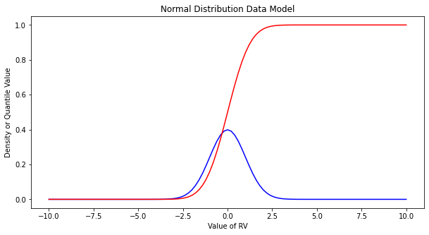
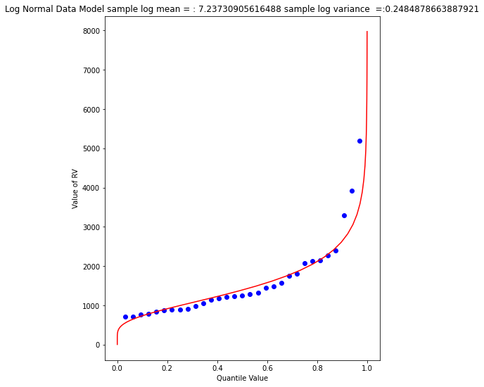

%%html
<!--Script block to left align Markdown Tables-->
<style>
table {margin-left: 0 !important;}
</style>
Copyright © 2021 Theodore G. Cleveland and Farhang Forghanparast, all rights reserved
ENGR 1330 Computational Thinking with Data Science
Last GitHub Commit Date: 2 Mar 2021
Lesson 17 : Data Modeling with Special Functions (Probability Distributions)
Objectives
- To understand the fundamental concepts involved in representing a data collection;
- Interpolation
- Extrapolation
- Concept of a fitting function
- Introduce select special functions
- Normal distribution function
- Gamma distribution function
- Extreme value distribution function
- Pearson Type 3 distribution function
Computational Thinking Concepts
The CT concepts include:
- Decomposition => Assert data are drawn from some process that is functionally explainable
- Abstraction => Represent data behavior with a function
- Algorithm Design => Use the function to predict "new" values of observations
Explaining Data
Recall our speed and time example, repeated below.
# Our data
time = [0,1.0,2.0,3.0,4.0,5.0,6.0]
speed = [0,3,7,12,20,30,45.6]
# Our model
def poly1(b0,b1,x):
# return y = b0 + b1*x
poly1=b0+b1*x
return(poly1)
# Our plotting function
import matplotlib.pyplot as plt
def make2plot(listx1,listy1,listx2,listy2,strlablx,strlably,strtitle):
mydata = plt.figure(figsize = (10,5)) # build a square drawing canvass from figure class
plt.plot(listx1,listy1, c='red', marker='v',linewidth=0) # basic data plot
plt.plot(listx2,listy2, c='blue',linewidth=1) # basic model plot
plt.xlabel(strlablx)
plt.ylabel(strlably)
plt.legend(['Data','Model'])# modify for argument insertion
plt.title(strtitle)
plt.show()
# Our "fitting" process
intercept = 5.0
slope = 3.0
modelSpeed = [] # empty list
for i in range(len(time)):
modelSpeed.append(poly1(intercept,slope,time[i]))
# Plotting results
make2plot(time,speed,time,modelSpeed,'time (sec.)','speed (m/s)','Plot of model and observations')

We are limited in the ability to fit the data because our representation function is limited to a straight line, now lets make a quadratic a possible model option.
# Our new model
def poly2(b0,b1,b2,x):
# return y = b0 + b1*x
poly2=b0+(b1+b2*x)*x # faster than b0 + b1*x + b2*x**2
return(poly2)
Now try fitting and plotting using our new model and should get indetical result, then we can explore using the new parameter b2
# Our "fitting" process
intercept = 5.0 # set to 0.0
slope = 3.0 # adjust to 2.0
curvature = 0.0 # adjust to 0.9
modelSpeed = [] # empty list
for i in range(len(time)):
modelSpeed.append(poly2(intercept,slope,curvature,time[i]))
# Plotting results
make2plot(time,speed,time,modelSpeed,'time (sec.)','speed (m/s)','Plot of model and observations')
# Our "fitting" process
intercept = 0.0 # set to 0.0
slope = 2.0 # adjust to 2.0
curvature = 0.9 # adjust to 0.9
modelSpeed = [] # empty list
for i in range(len(time)):
modelSpeed.append(poly2(intercept,slope,curvature,time[i]))
# Plotting results
make2plot(time,speed,time,modelSpeed,'time (sec.)','speed (m/s)','Plot of model and observations')

Now which "model" is more useful for these data? Explain your reasoning.
Lets take a look over the process we just implemented
- Prepare our data series
- Select a function type as the data model (in this case polynomials of order 1 and 2)
- Use a plotting tool to plot observed data (red) and our model (blue)
- Adjust model parameters (b0,b1,b2, ...) to get the blue model to pass through the red dots as best we can.
That's it, later we will explore ways to quantify the fit, which will help us choose a data model when multiple models appear good.
## Now lets apply our tools to different data, first we will read data from a file
amatrix = []
xvalue = []
yvalue = []
rowNumA = 0
file1 = open("MyFile.txt", "r") # get the data
for line in file1:
amatrix.append([float(n) for n in line.strip().split()])
rowNumA += 1
file1.close() # Disconnect the file
for i in range(len(amatrix)): # deconstruct the list, rename each column
xvalue.append(amatrix[i][0])
yvalue.append(amatrix[i][1])
make2plot(xvalue,yvalue,[],[],'x-value','y-value','EDA Plot of model and observations')
# Our "fitting" process
intercept = 0.0 # 0.0
slope = 0.01 # 0.018
curvature = 1e-09 # -0.0001
modelY = [] # empty list
for i in range(len(xvalue)):
modelY.append(poly2(intercept,slope,curvature,xvalue[i]))
# Plotting results
make2plot(xvalue,yvalue,xvalue,modelY,'x-value','y-value','EDA Plot of model and observations')
Lets build a different type of data model, here we will use a special function called the normal distribution function. A useful notation using the Normal density function as an example is:
In the function, is the random variable, is the population mean and is the population variance. These parameters (, and ) play the same role that play in our polynomial model - they simply adjust shape of the model.
Often we don't actually know the population values so we estimate them from the collection of observations, in this context these are called the sample mean and variance. Computation of the sample values is done using methods described in the lesson on descriptive statistics.
The integral of the from , produces a result called the cumulative distribution function. The value is not a random variable, but the integral value of the probability of the random variable being less than or equal to .
A useful notation using the Normal distribution as an example is:
For the Normal distribution the integral is a special function called the Error function and can be written as:
We will use these concepts to build an alternative to poly1 and poly2 as data models.
Normal Distribution Model (Using Math Package)
Here we will build a normal distribution model, essentially the functions for the above equations, and then will plot them. Then we will sample from a list of numbers from 1 to 100 and see if the data model is representative of the sample.
import math
def normdensity(x,mu,sigma):
weight = 1.0 /(sigma * math.sqrt(2.0*math.pi))
argument = ((x - mu)**2)/(2.0*sigma**2)
normdensity = weight*math.exp(-1.0*argument)
return normdensity
def normdist(x,mu,sigma):
argument = (x - mu)/(math.sqrt(2.0)*sigma)
normdist = (1.0 + math.erf(argument))/2.0
return normdist
# Our "fitting" process
mu = 50.0 # 50.0
sigma = 10 # 850.01**0.5
modelY = [] # empty list
for i in range(len(xvalue)):
modelY.append(normdist(mu,sigma,xvalue[i]))
# Plotting results
make2plot(xvalue,yvalue,xvalue,modelY,'x-value','y-value','EDA Plot of model and observations')

Interpolation
Lets return to our time/speed model and estimate the speed at 4.5 seconds
# Our "fitting" process
intercept = 0.0 # set to 0.0
slope = 2.0 # adjust to 2.0
curvature = 0.9 # adjust to 0.9
modelSpeed = [] # empty list
for i in range(len(time)):
modelSpeed.append(poly2(intercept,slope,curvature,time[i]))
# Plotting results
make2plot(time,speed,time,modelSpeed,'time (sec.)','speed (m/s)','Plot of model and observations')
print('Speed estimate at time ',4.5,'is ',poly2(intercept,slope,curvature,4.5))
Speed estimate at time 4.5 is 27.224999999999998
Extrapolation
print('Speed estimate at time ',9.5,'is ',poly2(intercept,slope,curvature,9.5))
Speed estimate at time 9.5 is 100.22500000000001
Probability Estimation Modeling
Probability estimation modeling is the use of probability distributions (population data models) to model or explain behavior in observed (sample data) values. Once a particular distribution is selected, then the concept of risk (probability) can be explored for events of varying magnitudes.
Two important “extremes” in engineering:
-
Uncommon (rare) events (floods, nuclear plant explosions, etc.)
-
Common, almost predictable events (routine discharges, traffic accidents at a dangerous intersection, network failure on a due date, etc.)
The probability distribution is just a model of the data, like a trend line for deterministic behavior; different distributions have different shapes, and domains and can explain certain types of observations better than others.
Some Useful Distributions (data models) include:
- Normal
- LogNormal
- Gamma
- Weibull
- Extreme Value (Gumbell)
- Beta
There are many more; they all have the common property that they integrate to unity on the domain .
The probability distributions (models) are often expressed as a density function or a cumulative distribution function.
# Standard Normal
mu = 0
sigma = 1
x = []
ypdf = []
ycdf = []
xlow = -10
xhigh = 10
howMany = 100
xstep = (xhigh - xlow)/howMany
for i in range(0,howMany+1,1):
x.append(xlow + i*xstep)
yvalue = normdensity(xlow + i*xstep,mu,sigma)
ypdf.append(yvalue)
yvalue = normdist(xlow + i*xstep,mu,sigma)
ycdf.append(yvalue)
#x
#ypdf
#ycdf
Make the plot below, nothing too special just yet. Plots of the density (in blue) and cumulative density (probability) in red.
import matplotlib.pyplot # the python plotting library
myfigure = matplotlib.pyplot.figure(figsize = (10,5)) # generate a object from the figure class, set aspect ratio
# Built the plot
matplotlib.pyplot.plot(x, ypdf, color ='blue')
matplotlib.pyplot.plot(x, ycdf, color ='red')
matplotlib.pyplot.xlabel("Value of RV")
matplotlib.pyplot.ylabel("Density or Quantile Value")
matplotlib.pyplot.title("Normal Distribution Data Model")
matplotlib.pyplot.show()

Exceedence Probability
The purpose of distributions is to model data and allow us to estimate an answer to the question, what is the probability that we will observe a value of the random variable less than or equal to some sentinel value. A common way to plot the quantile function is with accumulated probability on the horizontal axis, and random variable value on the vertical axis. Consider the figure below;

The RV Value is about 50,000 indicated by the horizontal magenta line.
The blue curve is some data model, for instance one of our distributions below.
The accumulated probability value at 50,000 is 0.1 or roughly 10% chance, but we also have to stipulate whether we are interested in less than or greater than.
In the figure shown, and is a non-exceedence probability. In words we would state "The probability of observing a value less than or equal to 50,000 is 90%" the other side of the vertical line is the exceedence probability; in the figure . In words we would state "The probability of observing a value equal to or greater than 50,000 is 10%." In risk analysis the sense of the probability is easily confusing, so when you can - make a plot. Another way to look at the situation is to simply realize that the blue curve is the quantile function with plotted on the vertical axis, and plotted on the horizontal axis.
Now lets put these ideas to use. We will sample from the population of integers from 0 to 100, with replacement. Any single pull from the population is equally likely. Lets take 25 samples (about 1/4 of the total population - usually we dont know the size of the population).
import numpy
population = []
for i in range(0,101,1):
population.append(i)
sample = numpy.random.choice(population,25)
# lets get some statistics
sample_mean = sample.mean()
sample_variance = sample.std()**2
# sort the sample in place!
sample.sort()
# built a relative frequency approximation to probability, assume each pick is equally likely
weibull_pp = []
for i in range(0,len(sample),1):
weibull_pp.append((i+1)/(len(sample)+1))
# Now plot the sample values and plotting position
myfigure = matplotlib.pyplot.figure(figsize = (10,5)) # generate a object from the figure class, set aspect ratio
# Built the plot
matplotlib.pyplot.scatter(weibull_pp, sample, color ='blue')
matplotlib.pyplot.plot(ycdf, x, color ='red')
matplotlib.pyplot.ylabel("Value of RV")
matplotlib.pyplot.xlabel("Density or Quantile Value")
matplotlib.pyplot.title("Normal Distribution Data Model")
matplotlib.pyplot.show()

What a horrible plot, but lets now use the sample statistics to "fit" the data model (red) to the observations (blue). Notice we have already rotated the axes so this plot and ones that follow are structured like the "Exceedence" plot above.
# Fitted Model
mu = sample_mean
sigma = math.sqrt(sample_variance)
x = []
ycdf = []
xlow = 0
xhigh = 100
howMany = 100
xstep = (xhigh - xlow)/howMany
for i in range(0,howMany+1,1):
x.append(xlow + i*xstep)
yvalue = normdist(xlow + i*xstep,mu,sigma)
ycdf.append(yvalue)
# Now plot the sample values and plotting position
myfigure = matplotlib.pyplot.figure(figsize = (10,5)) # generate a object from the figure class, set aspect ratio
# Built the plot
matplotlib.pyplot.scatter(weibull_pp, sample, color ='blue')
matplotlib.pyplot.plot(ycdf, x, color ='red')
matplotlib.pyplot.ylabel("Value of RV")
matplotlib.pyplot.xlabel("Quantile Value")
mytitle = "Normal Distribution Data Model sample mean = : " + str(sample_mean)+ " sample variance =:" + str(sample_variance)
matplotlib.pyplot.title(mytitle)
matplotlib.pyplot.show()
popmean = numpy.array(population).mean()
popvar = numpy.array(population).std()**2
# Fitted Model
mu = popmean
sigma = math.sqrt(popvar)
x = []
ycdf = []
xlow = 0
xhigh = 100
howMany = 100
xstep = (xhigh - xlow)/howMany
for i in range(0,howMany+1,1):
x.append(xlow + i*xstep)
yvalue = normdist(xlow + i*xstep,mu,sigma)
ycdf.append(yvalue)
# Now plot the sample values and plotting position
myfigure = matplotlib.pyplot.figure(figsize = (10,5)) # generate a object from the figure class, set aspect ratio
# Built the plot
matplotlib.pyplot.scatter(weibull_pp, sample, color ='blue')
matplotlib.pyplot.plot(ycdf, x, color ='red')
matplotlib.pyplot.ylabel("Value of RV")
matplotlib.pyplot.xlabel("Quantile Value")
mytitle = "Normal Distribution Data Model Population mean = : " + str(popmean)+ " Population variance =:" + str(popvar)
matplotlib.pyplot.title(mytitle)
matplotlib.pyplot.show()
Some observations are in order:
- The population is a uniformly distributed collection.
- By random sampling, and keeping the sample size small, the sample distribution appears approximately normal.
Real things of engineering interest are not always bounded as shown here, the choice of the Weibull plotting position is not arbitrary. The blue dot scatterplot in practice is called the empirical distribution function, or empirical quantile function.
Now we will apply these ideas to some realistic data.
Beargrass Creek
The file beargrass.txt contains annual peak flows for Beargrass Creek. The year is a water year, so the peaks occur on different days in each year; thus it is not a time series. Let's examine the data and see how well a Normal distribution data model fits, then estimate from the distribution the peak magnitude with exceedence probability 0.01 (1%-chance that will observe a value equal to or greater).
import pandas
beargrass = pandas.read_csv('beargrass.txt') #Reading a .csv file
beargrass.head()
| Year | Peak | |
|---|---|---|
| 0 | 1945 | 1810 |
| 1 | 1946 | 791 |
| 2 | 1947 | 839 |
| 3 | 1948 | 1750 |
| 4 | 1949 | 898 |
# beargrass.plot()
Now we will just copy code (the miracle of cut-n-paste!)
sample = beargrass['Peak'].tolist() # put the peaks into a list
sample_mean = numpy.array(sample).mean()
sample_variance = numpy.array(sample).std()**2
sample.sort() # sort the sample in place!
weibull_pp = [] # built a relative frequency approximation to probability, assume each pick is equally likely
for i in range(0,len(sample),1):
weibull_pp.append((i+1)/(len(sample)+1))
################
mu = sample_mean # Fitted Model
sigma = math.sqrt(sample_variance)
x = []; ycdf = []
xlow = 0; xhigh = 1.2*max(sample) ; howMany = 100
xstep = (xhigh - xlow)/howMany
for i in range(0,howMany+1,1):
x.append(xlow + i*xstep)
yvalue = normdist(xlow + i*xstep,mu,sigma)
ycdf.append(yvalue)
# Now plot the sample values and plotting position
myfigure = matplotlib.pyplot.figure(figsize = (7,9)) # generate a object from the figure class, set aspect ratio
matplotlib.pyplot.scatter(weibull_pp, sample ,color ='blue')
matplotlib.pyplot.plot(ycdf, x, color ='red')
matplotlib.pyplot.xlabel("Quantile Value")
matplotlib.pyplot.ylabel("Value of RV")
mytitle = "Normal Distribution Data Model sample mean = : " + str(sample_mean)+ " sample variance =:" + str(sample_variance)
matplotlib.pyplot.title(mytitle)
matplotlib.pyplot.show()

beargrass['Peak'].describe()
count 31.000000
mean 1599.258065
std 1006.239500
min 707.000000
25% 908.000000
50% 1250.000000
75% 1945.000000
max 5200.000000
Name: Peak, dtype: float64
A 1% chance exceedence is on the right side of the chart, it is the compliment of 99% non-exceedence, in terms of our quantile function we want to find the value that returns a quantile of 0.99.
myguess = 6000
print(mu,sigma)
print(normdist(myguess,mu,sigma))
1599.258064516129 989.8767915427474
0.9999956206542673
# If we want to get fancy we can use Newton's method to get really close to the root
from scipy.optimize import newton
def f(x):
mu = 1599.258064516129
sigma = 989.8767915427474
quantile = 0.99999
argument = (x - mu)/(math.sqrt(2.0)*sigma)
normdist = (1.0 + math.erf(argument))/2.0
return normdist - quantile
print(newton(f, myguess))
5820.974479887303
So a peak discharge of 4000 or so is expected to be observed with 1% chance, notice we took the value from the fitted distribution, not the empirical set. As an observation, the Normal model is not a very good data model for these observations.
Log-Normal
Another data model we can try is log-normal, where we stipulate that the logarithms of the observations are normal. The scripts are practically the same, but there is an inverse transformation required to recover original value scale. Again we will use Beargrass creek.
def loggit(x): # A prototype function to log transform x
return(math.log(x))
logsample = beargrass['Peak'].apply(loggit).tolist() # put the peaks into a list
sample_mean = numpy.array(logsample).mean()
sample_variance = numpy.array(logsample).std()**2
logsample.sort() # sort the sample in place!
weibull_pp = [] # built a relative frequency approximation to probability, assume each pick is equally likely
for i in range(0,len(sample),1):
weibull_pp.append((i+1)/(len(sample)+1))
################
mu = sample_mean # Fitted Model in Log Space
sigma = math.sqrt(sample_variance)
x = []; ycdf = []
xlow = 1; xhigh = 1.05*max(logsample) ; howMany = 100
xstep = (xhigh - xlow)/howMany
for i in range(0,howMany+1,1):
x.append(xlow + i*xstep)
yvalue = normdist(xlow + i*xstep,mu,sigma)
ycdf.append(yvalue)
# Now plot the sample values and plotting position
myfigure = matplotlib.pyplot.figure(figsize = (7,9)) # generate a object from the figure class, set aspect ratio
matplotlib.pyplot.scatter(weibull_pp, logsample ,color ='blue')
matplotlib.pyplot.plot(ycdf, x, color ='red')
matplotlib.pyplot.xlabel("Quantile Value")
matplotlib.pyplot.ylabel("Value of RV")
mytitle = "Log Normal Data Model log sample mean = : " + str(sample_mean)+ " log sample variance =:" + str(sample_variance)
matplotlib.pyplot.title(mytitle)
matplotlib.pyplot.show()

The plot doesn't look too bad, but we are in log-space, which is hard to interpret, so we will transform back to arithmetic space
def antiloggit(x): # A prototype function to log transform x
return(math.exp(x))
sample = beargrass['Peak'].tolist() # pull original list
sample.sort() # sort in place
################
mu = sample_mean # Fitted Model in Log Space
sigma = math.sqrt(sample_variance)
x = []; ycdf = []
xlow = 1; xhigh = 1.05*max(logsample) ; howMany = 100
xstep = (xhigh - xlow)/howMany
for i in range(0,howMany+1,1):
x.append(antiloggit(xlow + i*xstep))
yvalue = normdist(xlow + i*xstep,mu,sigma)
ycdf.append(yvalue)
# Now plot the sample values and plotting position
myfigure = matplotlib.pyplot.figure(figsize = (7,9)) # generate a object from the figure class, set aspect ratio
matplotlib.pyplot.scatter(weibull_pp, sample ,color ='blue')
matplotlib.pyplot.plot(ycdf, x, color ='red')
matplotlib.pyplot.xlabel("Quantile Value")
matplotlib.pyplot.ylabel("Value of RV")
mytitle = "Log Normal Data Model sample log mean = : " + str((sample_mean))+ " sample log variance =:" + str((sample_variance))
matplotlib.pyplot.title(mytitle)
matplotlib.pyplot.show()

Visually a better data model, now lets determine the 1% chance value.
myguess = 4440
print(mu,sigma)
print(normdist(loggit(myguess),mu,sigma)) # mu, sigma already in log space - convert myguess
7.23730905616488 0.4984855728993489
0.9900772507418302
# If we want to get fancy we can use Newton's method to get really close to the root
from scipy.optimize import newton
def f(x):
mu = 7.23730905616488
sigma = 0.4984855728993489
quantile = 0.99
argument = (loggit(x) - mu)/(math.sqrt(2.0)*sigma)
normdist = (1.0 + math.erf(argument))/2.0
return normdist - quantile
print(newton(f, myguess))
4433.567789173262
Now we have a decent method, we should put stuff into functions to keep code concise, lets examine a couple more data models
Gumbell (Double Exponential) Distribution
The Gumbell is also called the Extreme-Value Type I distribution, the density and quantile function are:
The distribution has two parameters, and , which in some sense play the same role as mean and variance. Lets modify our scripts further to see how this data model performs on the Bearcreek data.
Of course we need a way to estimate the parameters, a good approximation can be obtained using:
and
where and are the sample mean and variance.
def ev1dist(x,alpha,beta):
argument = (x - alpha)/beta
constant = 1.0/beta
ev1dist = math.exp(-1.0*math.exp(-1.0*argument))
return ev1dist
Now literally substitute into our prior code!
sample = beargrass['Peak'].tolist() # put the peaks into a list
sample_mean = numpy.array(sample).mean()
sample_variance = numpy.array(sample).std()**2
alpha_mom = sample_mean*math.sqrt(6)/math.pi
beta_mom = math.sqrt(sample_variance)*0.45
sample.sort() # sort the sample in place!
weibull_pp = [] # built a relative frequency approximation to probability, assume each pick is equally likely
for i in range(0,len(sample),1):
weibull_pp.append((i+1)/(len(sample)+1))
################
mu = sample_mean # Fitted Model
sigma = math.sqrt(sample_variance)
x = []; ycdf = []
xlow = 0; xhigh = 1.2*max(sample) ; howMany = 100
xstep = (xhigh - xlow)/howMany
for i in range(0,howMany+1,1):
x.append(xlow + i*xstep)
yvalue = ev1dist(xlow + i*xstep,alpha_mom,beta_mom)
ycdf.append(yvalue)
# Now plot the sample values and plotting position
myfigure = matplotlib.pyplot.figure(figsize = (7,8)) # generate a object from the figure class, set aspect ratio
matplotlib.pyplot.scatter(weibull_pp, sample ,color ='blue')
matplotlib.pyplot.plot(ycdf, x, color ='red')
matplotlib.pyplot.xlabel("Quantile Value")
matplotlib.pyplot.ylabel("Value of RV")
mytitle = "Extreme Value Type 1 Distribution Data Model sample mean = : " + str(sample_mean)+ " sample variance =:" + str(sample_variance)
matplotlib.pyplot.title(mytitle)
matplotlib.pyplot.show()

Again a so-so visual fit. To find the 1% chance value
myguess = 3300
print(alpha_mom,beta_mom)
print(ev1dist(myguess,alpha_mom,beta_mom)) #
1246.9363972503857 445.4445561942363
0.990087892543188
# If we want to get fancy we can use Newton's method to get really close to the root
from scipy.optimize import newton
def f(x):
alpha = 1246.9363972503857
beta = 445.4445561942363
quantile = 0.99
argument = (x - alpha)/beta
constant = 1.0/beta
ev1dist = math.exp(-1.0*math.exp(-1.0*argument))
return ev1dist - quantile
print(newton(f, myguess))
3296.0478279991366
Gamma Distribution (as Pearson Type 3)
One last data model to consider is one that is specifically stipulated for use by federal agencies for probability estimation of extreme hydrologic events. The data model ia called the Log-Pearson Type III distribution, its actually a specific case of a Gamma distrubution.
This example we will dispense with tyring to build it in python primative, and just use a package - the density function is not all that hard, but the quantile function is elaborate.
Learn more at http://54.243.252.9/engr-1330-psuedo-course/CECE-1330-PsuedoCourse/3-Readings/NumericalRecipesinF77.pdf (in particular around Page 276)
As usual, lets let Google do some work for us, using the search term "gamma quantile function; scipy" we get to this nice blog entry https://docs.scipy.org/doc/scipy/reference/generated/scipy.stats.gamma.html which is a good start.
A Pearson Type III data model has the following density function:
If we make some substitutions: then the density function is
which is now a one parameter Gamma density function just like the example in the link.
Reading a little from http://atomickitty.ddns.net/documents/university-courses/ce-5361-swhydrology/1-Lessons.src/Lesson22/AdditionalReading/Bulletin17C-tm4b5-draft-ACWI-17Jan2018.pdf we can relate the transformations to descriptive statistics (shown below without explaination) as:
,
,
So we have a bit of work to do. The name of the functions in scipy we are interested in are gamma.pdf(x,a) and gamma.cdf(x,a) So lets build a tool to generate a Log-Pearson Type III data model, then apply it to Beargrass Creek. We will use a lot of glue here.
First load in dependencies, and define support functions we will need
import scipy.stats # import scipy stats package
import math # import math package
import numpy # import numpy package
# log and antilog
def loggit(x): # A prototype function to log transform x
return(math.log(x))
def antiloggit(x): # A prototype function to log transform x
return(math.exp(x))
def weibull_pp(sample): # plotting position function
# returns a list of plotting positions; sample must be a numeric list
weibull_pp = [] # null list to return after fill
sample.sort() # sort the sample list in place
for i in range(0,len(sample),1):
weibull_pp.append((i+1)/(len(sample)+1))
return weibull_pp
Then the gamma distribution from scipy, modified for our type of inputs.
def gammacdf(x,tau,alpha,beta): # Gamma Cumulative Density function - with three parameter to one parameter convert
xhat = x-tau
lamda = 1.0/beta
gammacdf = scipy.stats.gamma.cdf(lamda*xhat, alpha)
return gammacdf
Then load in the data from the data frame, log transform and generate descriptive statistics.
#sample = beargrass['Peak'].tolist() # put the peaks into a list
sample = beargrass['Peak'].apply(loggit).tolist() # put the log peaks into a list
sample_mean = numpy.array(sample).mean()
sample_stdev = numpy.array(sample).std()
sample_skew = 3.0 # scipy.stats.skew(sample)
sample_alpha = 4.0/(sample_skew**2)
sample_beta = numpy.sign(sample_skew)*math.sqrt(sample_stdev**2/sample_alpha)
sample_tau = sample_mean - sample_alpha*sample_beta
Now generate plotting positions for the sample observations
plotting = weibull_pp(sample)
Now generate values for the data model (for plotting our red line "fit"), set limits to be a little beyond the sample range.
x = []; ycdf = []
xlow = (0.9*min(sample)); xhigh = (1.1*max(sample)) ; howMany = 100
xstep = (xhigh - xlow)/howMany
for i in range(0,howMany+1,1):
x.append(xlow + i*xstep)
yvalue = gammacdf(xlow + i*xstep,sample_tau,sample_alpha,sample_beta)
ycdf.append(yvalue)
Now reverse transform back to native scale, and plot the sample values vs plotting position in blue, and the data model in red
# reverse transform the peaks, and the data model peaks
for i in range(len(sample)):
sample[i] = antiloggit(sample[i])
for i in range(len(x)):
x[i] = antiloggit(x[i])
myfigure = matplotlib.pyplot.figure(figsize = (7,8)) # generate a object from the figure class, set aspect ratio
matplotlib.pyplot.scatter(plotting, sample ,color ='blue')
matplotlib.pyplot.plot(ycdf, x, color ='red')
matplotlib.pyplot.xlabel("Quantile Value")
matplotlib.pyplot.ylabel("Value of RV")
mytitle = "Log Pearson Type III Distribution Data Model\n "
mytitle += "Mean = " + str(antiloggit(sample_mean)) + "\n"
mytitle += "SD = " + str(antiloggit(sample_stdev)) + "\n"
mytitle += "Skew = " + str(antiloggit(sample_skew)) + "\n"
matplotlib.pyplot.title(mytitle)
matplotlib.pyplot.show()

And as before lets find the value that retruns the 99% quantile - we will just use the newton method above. First recover the required model parameters. Then we will paste these into the function for the Newton's method.
print(sample_tau)
print(sample_alpha)
print(sample_beta)
6.904985340898647
0.4444444444444444
0.7477283593490234
# If we want to get fancy we can use Newton's method to get really close to the root
from scipy.optimize import newton
def f(x):
sample_tau = 5.976005311346212
sample_alpha = 6.402272915026134
sample_beta = 0.1970087438569494
quantile = 0.9900
argument = loggit(x)
gammavalue = gammacdf(argument,sample_tau,sample_alpha,sample_beta)
return gammavalue - quantile
myguess = 5000
print(newton(f, myguess))
5856.10913158364
Trust, but verify!
round(gammacdf(loggit(5856.109),sample_tau,sample_alpha,sample_beta),4)
0.9753
Now lets summarize our efforts regarding Beargrass Creek annual peaks and probabilities anticipated.
| Data Model | 99% Peak Flow | Remarks |
|---|---|---|
| Normal | 3902 | so-so visual fit |
| Log-Normal | 4433 | better visual fit |
| Gumbell | 3296 | better visual fit |
| Log-Pearson III | 5856 | best (of the set) visual fit |
At this point, now we have to choose our model and then can investigate different questions. So using LP3 as our favorite, lets now determine anticipated flow values for different probabilities (from the data model) - easy enought to just change the quantile value and rerun the newtons optimizer, for example:
| Exceedence Probability | Flow Value | Remarks |
|---|---|---|
| 25% | 968 | First Quartile Divider |
| 50% | 1302 | Median, and Second Quartile Divider |
| 75% | 1860 | 3rd Quartile Divider |
| 90% | 2706 | 10% chance of greater value |
| 99% | 5856 | 1% chance of greater value (in flood statistics, this is the 1 in 100-yr chance event) |
| 99.8% | 9420 | 0.002% chance of greater value (in flood statistics, this is the 1 in 500-yr chance event) |
| 99.9% | 11455 | 0.001% chance of greater value (in flood statistics, this is the 1 in 1000-yr chance event) |
# If we want to get fancy we can use Newton's method to get really close to the root
from scipy.optimize import newton
def f(x):
sample_tau = 5.976005311346212
sample_alpha = 6.402272915026134
sample_beta = 0.1970087438569494
quantile = 0.50
argument = loggit(x)
gammavalue = gammacdf(argument,sample_tau,sample_alpha,sample_beta)
return gammavalue - quantile
myguess = 1000
print(newton(f, myguess))
1302.814639184079
References:
-
Jamie Chan (2014) Learn Python in One Day and Learn It Well. LCF Publishing. Kindle Edition. http://www.learncodingfast.com/python
-
Grus, Joel. Data Science from Scratch: First Principles with Python. O'Reilly Media. Kindle Edition. (http://safaribooksonline.com)
-
Christian, B, and Griffiths Tom (2016) Algorithms to live by: The computer science of human decisions. Henry Holt and Company, ISBN 9781627790369 (hardcover)|ISBN 9781627790376 (electronic book)
-
https://www.amazon.com/Distributional-Statistics-Environment-Statistical-Computing/dp/1463508417
-
England, J.F. Jr., Cohn, T.A., Faber, B.A., Stedinger, J.R., Thomas Jr., W.O., Veilleux, A.G., Kiang, J.E., and Mason, R.R.Jr., 2018, Guidelines for Determining Flood Flow Frequency—Bulletin 17C: U.S. Geological Survey Techniques andMethods, book 4, chap. B5, 146 p., https://doi.org/10.3133/tm4B5
-
https://www.astroml.org/book_figures/chapter3/fig_gamma_distribution.html
-
https://www.inferentialthinking.com/chapters/10/Sampling_and_Empirical_Distributions.html
-
https://www.inferentialthinking.com/chapters/15/Prediction.html